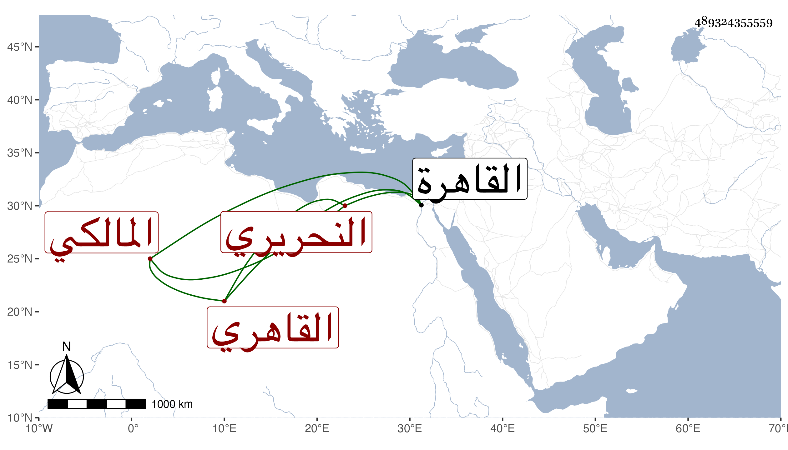

0902Sakhawi.DawLamic.ITO20230111-ara1.EIS1600.489324355559
Biography ID: 489324355559
711
محمد بن محمد بن محمد بن محمد بن إسماعيل ولي الدين بن فتح الدين أبي الفتح بن شمس الدين بن شمس الدين بن مجد الدين النحريري الأصل القاهري المالكي . هكذا كتب لي نسبه ورأيت عندي أنه محمد بن محمد بن محمد بن أبي بكر فالله أعلم وقال أنه ولد في ثاني عشر إحدى الجمادين سنة ثمان وثلاثين بالقاهرة ونشأ فقرأ القرآن عند البدر حسن الفيومي إمام الزاهد وأنه حفظ العمدة والمختصر للشيخ خليل وألفية النحو وأخذ الفقه عن أبي الجود والقاضي ولي الدين السنباطي وأبي البركات ويحيى العلمي المغربيين والسنهوري وحض ودروس أبي القسم النويري سيما في ألفيته بقراءة البدر السعدي الحنبلي وكذا أخذ النحو وغيره عن أبي السعادات البلقيني والنحو فقط عن الجمال بن هشام والأصول عن العلاء الحصني بل في العضد وحاشيتيه بقراءة الخطيب الوزيري عن التقي الحصني وقرأ الموطأ والبخاري على السيد النسابة ، وناب في القضاء من شوال سنة ستين عن الولوي السنباطي فمن بعده ، وحج في سنة سبع وسبعين وتميز في الفضائل عن كثيرين سيما في القضاء والشروط وذكر بالإقدام بحيث منعه السلطان مرة بعد أخرى وطال منعه في الثانية دهرا بحيث باع كثيرا مما حصله من وظائف وكتب ولولا ارتفاقه بقريبه الزين عبد القادر الحمامي في حياته ثم بعد موته بالتحدث على أيتامه لا نكشف حاله . وبالجملة فهو من نوادر قضاة المالكية .
